Garmin Map
Your Garmin .img maps on iPhone, Mac and Android car head units, drawn straight from the map file and fully offline, with hillshading, search, GPS follow, route planning, turn-by-turn navigation and saved places.
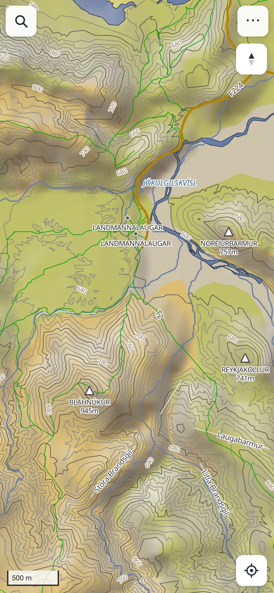
What you need
- A Garmin map in
.imgformat, unlocked (not encrypted). For example GPSmap.is Iceland: in its Android package the map is in the MAPS folder. - Elevation files (optional): SRTM
.hgtfiles, such as those in the package's HILLSHADE folder. They add hill shading and the height where you stand. - Put the files where your device can open them: on iPhone, the Files app (AirDrop or iCloud Drive work); on Mac, any folder; on an Android head unit, its storage or a USB stick.
Install on iPhone
- Open atlipall.github.io/garmin-maps/app in Safari.
- Tap Share, then Add to Home Screen.
- Open the map from its Home Screen icon from now on. The app then runs full screen, and iOS keeps its stored map more reliably than in a browser tab.
On a Mac, open the same address in Safari or Chrome. In Safari you can use File → Add to Dock.
Install on an Android head unit
For a car's Android head unit (or any Android device) there's an app to install. It opens the map in the unit's Chrome, full screen with no address bar; the map inside it updates with the site, so the APK itself rarely needs updating.
Download the Android app (APK) →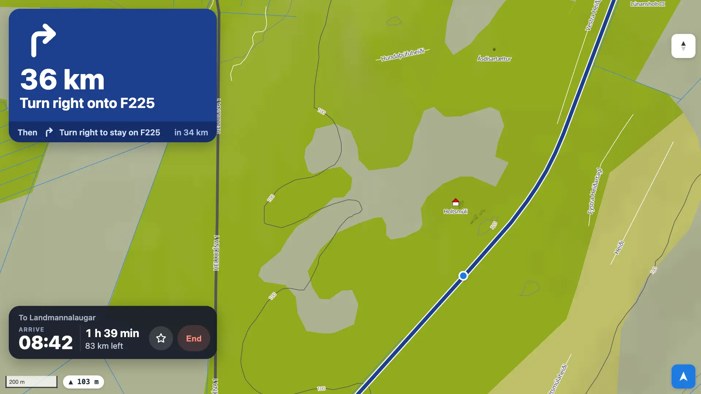
- On the head unit, open the download link in Chrome, or copy
GarminMap.apkto it on a USB stick. - Open the downloaded file. Android asks whether to allow installing apps from Chrome (or the file manager): allow it, then tap Install.
- Start Garmin Map from the app list and allow location when asked.
- Load your map (below). If you've already loaded it in the unit's Chrome browser, it's there: the app shares Chrome's storage for this site.
A new version of the app installs over the old one and keeps your map and data. The app needs Chrome on the unit; without it, it opens the map in its own built-in browser, where Google Drive sync, Export GPX and Back up… don't work. On a phone or tablet with Chrome's ⋮ → Install app you don't need the APK: install the site from Chrome instead.
Load your map
- Under Map (.img), choose your map file.
- Under Elevation, select all the
.hgtfiles at once (optional). - Tap Import. The files are copied into the app's storage on this device; a 100 MB map takes a few seconds.
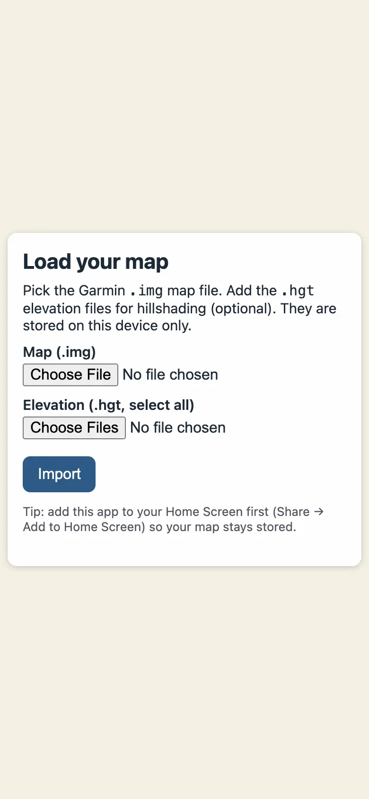
To switch maps later, use ⋯ → Load another map. Your current map stays until the new one has finished importing.
Find places
Tap the magnifier at the top left and type. Accents don't matter: thorsmork finds Þórsmörk. Each result shows what it is, where it is and how far away:
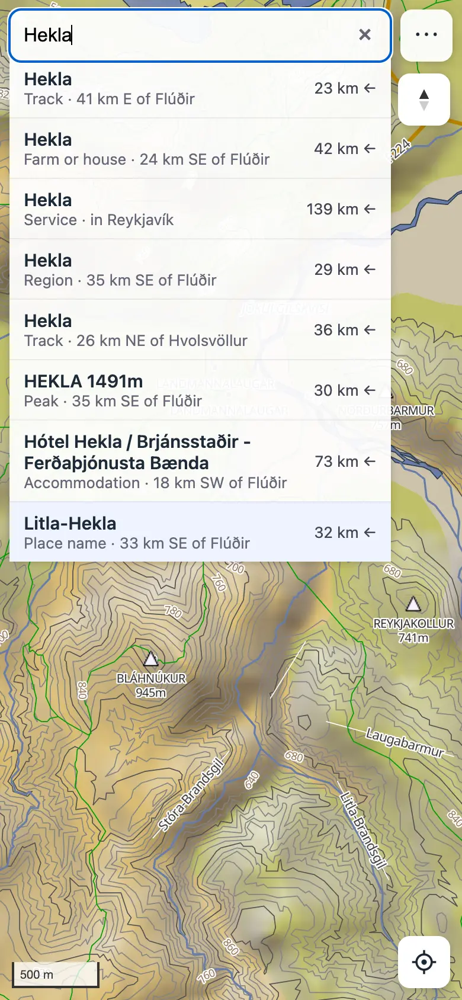
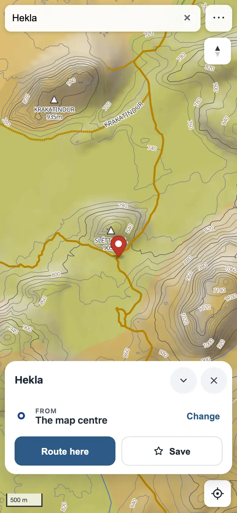
Places near you come first. Tap a result to fly there and open its card (see Plan a route); the × clears the search and the pin. An empty search folds back into the magnifier when you tap the map.
Press and hold anywhere on the map (on a computer: right-click, or Ctrl+Click on a Mac) to drop a pin there. A pin dropped on a named feature takes its name: Dropped pin · Hekla 1491m, Dropped pin · Þórisvatn.
Follow your position
The locate button sits bottom-right. Each tap moves to the next mode:
- The compass button (top right) turns the map back to north up.
- Press and hold the locate button to turn location off.
- Standing or walking, the direction comes from the compass; above about 7 km/h, from your direction of travel, which is more reliable in a car.
- While following, the zoom adapts to your speed: close in on foot, further out when driving (about 100 m across the scale bar walking, 1 km on fast roads). Zoom by hand to keep your own zoom until you next tap the locate button.
- The ▲ 611 m label bottom-left is the ground height where you are, read from the elevation files.
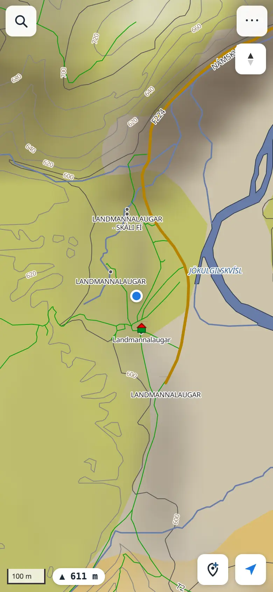
Tracks
Tracks are routes you've saved, GPX files you've imported and, in the Android app, trips you've recorded. The app can show and navigate them.
- Save a planned route with Save as track on its card, or open ⋯ → Tracks and tap Import GPX… (you can pick several files at once).
- Each track gets its own colour on the map: lines, and waypoints as pins with their names.
- The list shows each track's distance, climb and time; the pencil renames it, the eye hides it and the bin deletes it (tap twice). Tap a track for its card: Navigate, Reverse and Export GPX.
Recording a trip (Android app)
Tap the record button (a red dot, left of the save-a-pin button). The app records with the unit's GPS, also with the map closed or the screen off; a notification shows the distance and time, with Stop. On the map, a pill on top shows the trip so far and the button turns into a red Stop. When you stop, the trip is kept in Tracks as, for example, Drive 5 Oct, 14:20–14:31, and a card lets you give it another name or Discard it; left alone, it closes after 30 seconds. If precise location is off for the app, it says so instead of recording. A trip that didn't reach the map can be sent again: ⋯ → Diagnostics → Android app's log → Send last trip.
Navigating a track
Tap Navigate on a track's card. If you're not on the track, the app plans the way to its nearest point ahead of you, then guides you along the track to its end. Reverse follows it the other way. A route saved as a track keeps its turn instructions; an imported track gets them from the map, with road names where it follows roads and the turns of its bends on trails ("Keep right on the trail"). Leave the track on a road and the app plans the way back to it; leave it on a trail and the banner says how far it is and which way.
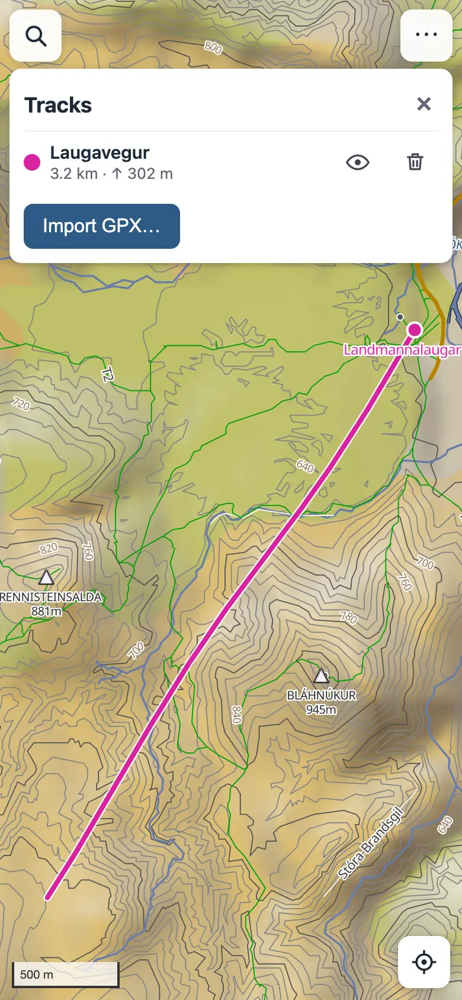
Tracks are stored on this device and stay when you load another map.
Plan a route
Open a place's card (a search result, a dropped pin or a saved star) and tap Route here. The route is worked out on the phone, offline, over the map's own road network, from your position (or the map centre without GPS). Tap the map elsewhere to close a card you haven't routed yet.
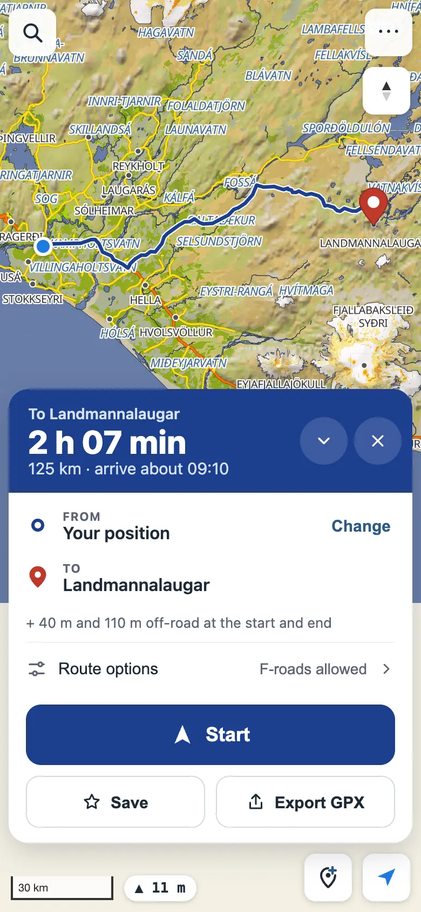
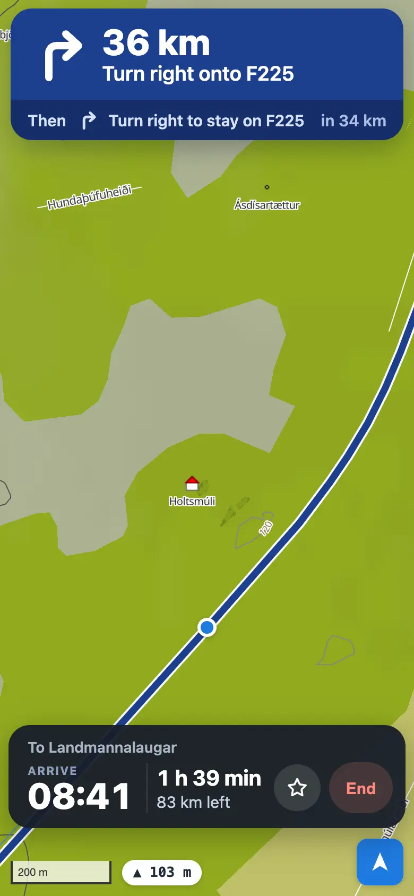
The route card
- The blue band shows the driving time, the distance and roughly when you'd arrive if you left now.
- Below it are the stops: From (tap Change to use your location or choose a start on the map), any waypoints, and To.
- Route options holds two switches: turn off Allow F-roads and tracks for a normal car, or turn on Prefer F-roads and tracks to take the highland way even when the Ring Road would be a little quicker. The time shown stays the realistic one.
- A place away from any road joins the nearest road; the straight way to it is drawn dashed and its length is shown under the stops.
- × clears the route (it asks first).
Waypoints
With a route shown, drop a pin (or pick a search result or saved star) and tap Add as waypoint. It's fitted in where it adds the least distance, moved onto the nearest road, and shown as a numbered circle; the route is worked out again through it without moving the map. Remove one with its × in the card, or tap its circle on the map. New route starts over from the new place instead.
Routes use the map's own speeds, capped on the highland roads: F-roads 40 km/h, tracks 25, rough 4×4 tracks 20. If iOS closes the app (in the background, or when it runs short of memory), it opens again where you were: the same map view, location mode and route, worked out again from your position.
Save places and routes
- Tap Save on a place's card, keep or change the suggested name, and it's kept on this device. A route is saved as a track (see Tracks).
- Where you are: with location on, the pin button left of the locate button saves your position. It suggests a name from the map (the feature you're at, or the nearest named place); change it and tap Save. While navigating, the ☆ next to End saves the spot at once with the suggested name, so there's nothing to type. Either way, Undo takes it back for a few seconds.
- Saved places show on the map as gold stars; tap one to open its card. Routing to it reads Routing to and its name.
- ⋯ → Saved places lists your saved places. Rename one with the pencil; delete one with the bin (tap twice).
- Export GPX on a route or a track's card makes a GPX file: the route as a track, and the start, waypoints and destination as named points, for a Garmin device, another map app or Google Earth. On the iPhone it opens the share sheet (save to Files, AirDrop, another app); on a computer it downloads.
- ⋯ → Sync and backup → Back up… writes one file with all your saved places and routes and your GPX tracks. Restore… on another device (or after reinstalling) brings in what the file has and this device doesn't; nothing is deleted. Keep the file in iCloud Drive to move it between your iPhone and Mac.
- Sync with Google Drive (optional, in ⋯ → Sync and backup) keeps your saved places and routes and your GPX tracks the same on every device you sign in on. They're kept in a hidden folder in your Google Drive that only this app can see; the app gets no access to your other files. It syncs when the app opens, when you come back to it and a few seconds after a change; everything keeps working offline and syncs when you're back online. Stop syncing turns it off on that device. You sign in once on each device: signing in goes to Google's page and back to the app, and after that it stays signed in until you tap Stop syncing (or remove the app's access in your Google account). If the app's sign-in helper can't be reached, it offers Google's one-hour sign-in instead.
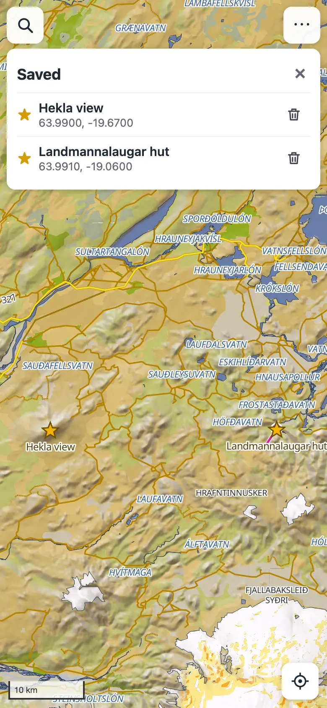
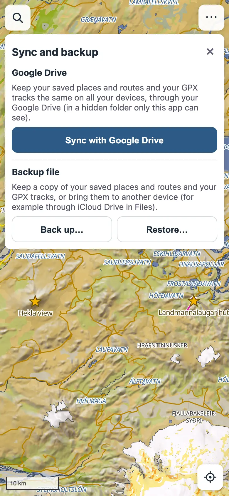
Keep the screen on
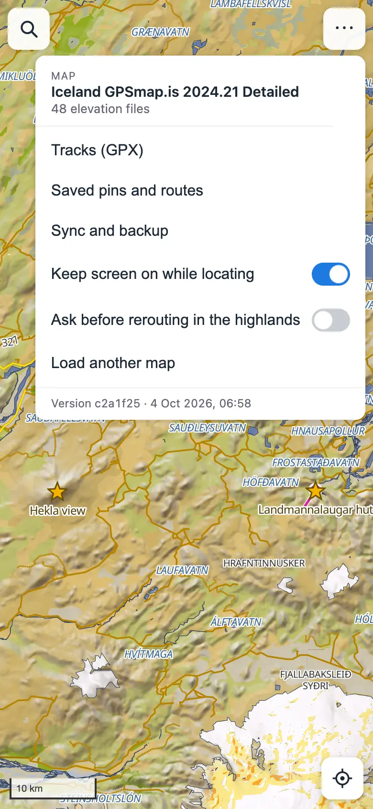
While location is on, the screen stays on so the map doesn't go dark as you walk. Turn this off in ⋯ → Keep screen on while locating. It needs iOS 18.4 or later for Home Screen apps, and Low Power Mode may still let the screen sleep.
Offline and privacy
- After the first launch the app works without a connection, in airplane mode too.
- When you open the app or switch back to it with a connection, it checks for a new version and downloads it in the background. Once it's ready (offline too), A new version is ready appears at the top: tap Reload to use it (the app comes back where you were), or × to carry on with the version you have. It waits while you're navigating. Without a connection nothing is checked and nothing changes.
- Your map, elevation files, tracks and saved places and routes are stored only on your device. Nothing is uploaded: there is no account, no server of ours and no tracking, and your position never leaves the phone, unless you turn on Google Drive sync, which copies your saved places, routes and tracks to your own Drive.
If something goes wrong
The Android app shows an address bar
Chrome checks once that the app belongs to this site, which needs a connection. Close the app fully (swipe it away in the recent apps) and open it again while online.
"No app can perform this action" when choosing files on a head unit
Some head units come without Android's file picker. In Settings → Apps, choose ⋮ → Show system, find Files (or Documents) and tap Enable if it's disabled. If it isn't there, install a file manager that can pick files, such as Material Files or Files by Google, from the Play Store, and allow it storage access.
The map stays blank on the Android head unit
The unit's Chrome (or its Android System WebView) is too old for the map, which needs WebGL 2. Update Chrome and Android System WebView, from the unit's app store or the APKs its maker provides.
The map is gone and it asks for the files again
iOS can clear the storage of web apps you haven't opened for a long time. Import the files again; adding the app to the Home Screen makes this much less likely.
The app started over while I was using it
iOS closes apps that use too much memory, most often when zooming far out, and Home Screen apps left in the background. The app reopens where you were, with your route worked out again. In heading-up mode, touch the screen once so iOS lets the compass back on.
The locate button is greyed out
Location access was declined. Allow it in Settings → Privacy & Security → Location Services → Safari Websites, then reopen the app.
No direction cone
Without compass access the cone appears only once you're moving faster than walking pace. The app asks for compass access when you turn location on; to be asked again, close the app completely, reopen it and tap the locate button.
Privacy policy
Last updated 2 October 2026.
- Everything stays on your device. Your maps, elevation files, GPX tracks, saved places and routes, and settings are stored in the browser's storage on your device. They are not sent to us: there is no account, no analytics, no advertising and no tracking. The only server of ours is the sign-in helper for Google Drive sync (below), which never sees your data.
- Your location is used only on your device, to show where you are, follow you and plan routes from your position. It is never sent anywhere, except that a saved route or GPX track you sync to your own Google Drive (below) includes the positions it was planned or recorded from.
- Google Drive sync is optional. If you turn it on, the app signs in to your Google account and keeps a copy of your saved places and routes and your GPX tracks in a hidden app folder in your own Google Drive. The app asks only for access to that folder (the
drive.appdatapermission), never to your other files. The data goes directly between your device and Google; we never see it. Google's privacy policy applies to your Google account and Drive. The app's use of information received from Google APIs follows the Google API Services User Data Policy, including its Limited Use requirements. - The sign-in helper. So that you don't have to sign in every hour, sign-in goes through a small helper of ours (a Cloudflare Worker at
garmin-maps-auth.atlipall.workers.dev). It holds the app's Google client secret, trades Google's one-time sign-in code for access to the app folder, and later renews that access. It keeps nothing: the lasting access key is sent back to your device locked with a key only the helper has, and your device sends it back when the access needs renewing. The helper never receives your saved places, routes, tracks or location, and keeps no logs of keys. Cloudflare, which runs it, may log basic request details such as IP addresses; see Cloudflare's privacy policy. - To stop syncing, tap Stop syncing in ⋯ → Sync and backup; this also withdraws that device's access key at Google. To remove the synced copy and the app's access, open your Google Account's third-party connections and remove Map viewer, and delete the app's hidden data under Drive's Settings → Manage apps.
- Downloading the app. The app is served by GitHub Pages, which may log basic request details such as your IP address when the app is downloaded or updated; see GitHub's privacy statement. After that the app works offline. The Android app is downloaded from GitHub too; it only opens this same app in Chrome (or in its own built-in browser), asks for nothing but your location, and collects nothing.
- Deleting your data. Remove the app from your Home Screen or clear the website data for atlipall.github.io in your browser settings. ⋯ → Load another map → Remove stored map removes the map files.
- Questions: open an issue on GitHub.
Terms of service
Last updated 30 September 2026.
- Free, as is. The app is free to use and provided as is, without any warranty. We are not liable for any loss or damage arising from its use, to the extent the law allows.
- Not a safety tool. Maps, positions, routes, distances and driving times may be wrong or out of date. Use your own judgement, follow road signs and closures, and check conditions before you travel. In Iceland, see road.is and safetravel.is; F-roads need a 4×4 and are closed much of the year.
- Your maps. You need the right to use the map files you load. Map data belongs to its publisher; the app only displays it on your device.
- Google Drive sync uses your Google account and is also subject to Google's terms of service.
- Changes. The app and these terms may change or the app may be discontinued at any time; the date above shows the latest version.